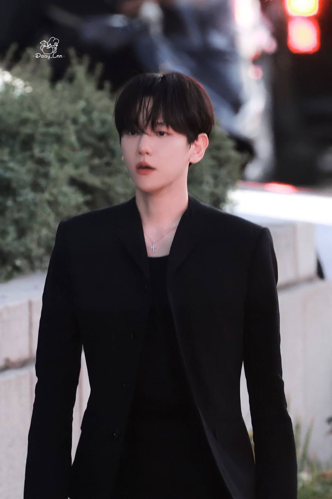

|
 |
English Name | Byun Baek Hyun |
| Korean Name | 변 백현 | |
| Born | 6 May 1992(age 34) Bucheon, Gyeonggi Province, South Korea | |
| Nationality | Korean | |
| Education |
|
|
| Occupations | Singer,Actor,CEO of INB100 Entertainment | |
| Years Active | 2012-present | |
| Height | 174cm(5'9") | |
| Status | Single |
Byun Baek-hyun (Korean: 변백현; born May 6, 1992), known mononymously as Baekhyun, is a South Korean singer and actor. He is a member of the South Korean-Chinese boy band EXO, its subgroup Exo-K and its subunit Exo-CBX. In 2019, Baekhyun became a leader of the supergroup SuperM. Following the release of several albums and extended plays with Exo, Baekhyun began pursuing a solo career in 2019 by releasing his debut extended play, City Lights, which sold more than half-a-million copies in 2019 and is the best-selling album by a solo artist of the 2010s in South Korea.[1] City Lights was followed by two million-selling EPs, Delight (2020), the first album by a solo artist in South Korea to have sold over 1 million copies in 19 years, and Bambi (2021).[2][3] He has been labeled as the "Genius Idol",[4] and won three consecutive Mnet Asian Music Awards for Best Male Artist from 2019 to 2021.
Made with Love ♥